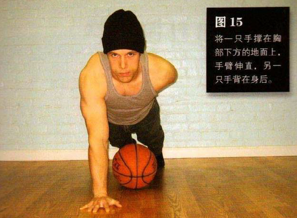
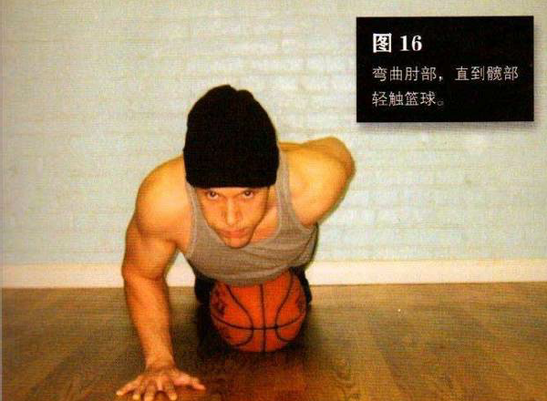

摆出半俯卧撑最高点时的姿势，即将篮球放在髋部下方。将一只手撑在胸部下方的地面上，手臂伸直，另一只手背在身后。
接着弯曲肘部，直到髋部轻触篮球。这是该动作的最低点。暂停一下，然后将自己推回到起始姿势。如果你的肱三头肌不够发达，那做该动作时上身很容易发生扭曲。坚持住，整个身体保持一条直线。
接着弯曲肘部，直到髋部轻触篮球。这是该动作的最低点。暂停一下，然后将自己推回到起始姿势。如果你的肱三头肌不够发达，那做该动作时上身很容易发生扭曲。坚持住，整个身体保持一条直线。
初级标准：1 组，5 次
中级标准：2 组，各 10 次
高级标准：3 组，各 20 次